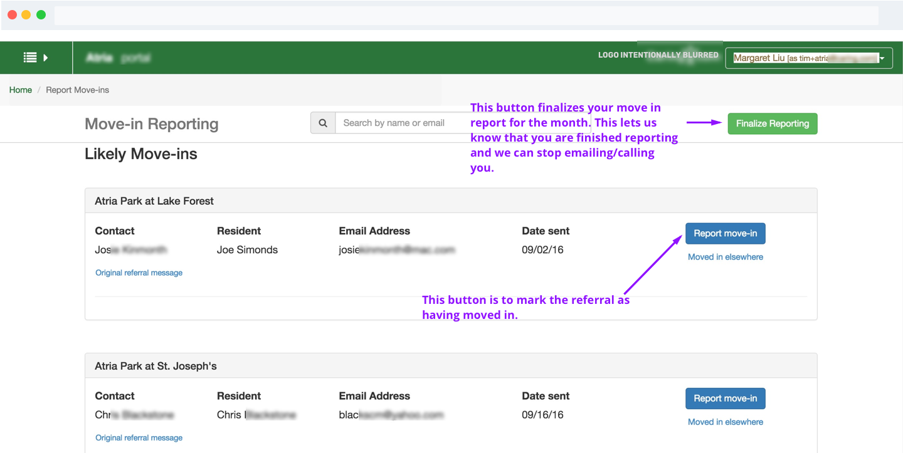

04 CONTACT
Say Hello
Have a cool project? Want to get in contact or just want to say hello? Drop me a line.
Partner portal is a product that connects us to our partners, and our partners to our consumers. Through portal, partners can update their community information, report move ins, and manage their referrals.

How can we improve the experience for our partners?
Our goal was to create a product that would build a better relationship with our partners. This included making it easier for users to report move-ins, putting a system in place for tracking leads and reporting, and converting most operations to self-serve.
I was given a set of business goals that I translated to better human experiences. Focusing on these human experiences is like the northern light for my design process. For me, that starts with getting to know the people that will be using our product. I sat with the PM and had casual conversations with some MVP users to just get a feel of how they felt about Partner Portal and how it tied in with their job and what motivates them. In our initial conversations, we focused on the big picture. We let this be the foundation for our product and later dug deeper to add the details. I translated these conversations to storyboards to discover what steps could be taken out, what felt natural and what didn’t, and opportunities where we could delight the user.

Scribbling out ideas and flows helps me to think - no matter how incomprehensible it may seem.

From ideation to creation
The original portal design had little thought regarding the flows, visual hierarchy, or design patterns. For instance, the most important feature--reporting a move-in and viewing your referrals--was buried under five steps and categorized under “Community Performance,” which partners did not recognize as relating to referrals or move ins.
I focused most of the IA on our main flow; reporting a move in. Which parts could we cut? Which parts were more complex? Are there edge cases? Are there opportunities that we missed? We laid out the organization of the system so that we could see areas for improvement and landed on the below structure.

The organization of the system was designed to accommodate new features that could be added in the future without compromising the most important ones.
One of best ways to ensure a move-in is with up-to-date information. The more accurate the information we have about a community, the better we can match them with a consumer. Historically, communities had only been able to manage their rate information in the Portal. We decided to significantly expand that functionality in the new Portal by adding the capacity for partners to set and update not just rates, but also images, promotions, and contact information.
The first iteration had a table system that limited the program to a horizontal space and didn’t support images.
I approached the product team and argued for an overhaul of the entire design in favor of a new one that would support current and new features. The resulting layout has a modular UI with flexible containers to hold varying amounts of information, allowed room for additional features, and can easily be made responsive.

Through the initial research process, we concluded that Referrals should be made its own section allowing users to access the most important data with a single click. We compiled a spec that included the following:
After setting out to create an MVP, we had to decrease scope in some areas. The first version solved many of the issues we had with the old portal, but further testing revealed that it still wasn’t very intuitive. As a result, I played with various button placements and tweaked the layout and copy.

The flow still had a few tricky areas, but over a few iterations, these were resolved. I found that the two points that always appeared before a move-in was reported were from the Referral Detail view and from the Referrals View. Placing a “report move-in” button on those two pages made sense for the user and we saw a significant increase in move-in reporting.

Portal was one of the first big projects I worked on in my time here and it was a nice introduction to the importance of an established style guide for engineers. I assumed that the engineers could see what I saw when they couldn't. Having predetermined components and styles create rules that engineers can follow and understand. Furthermore, creating logical rules for button and element behaviors also help them to make decisions on edge cases where there may not be a design already in place.
View on BehanceHave a cool project? Want to get in contact or just want to say hello? Drop me a line.